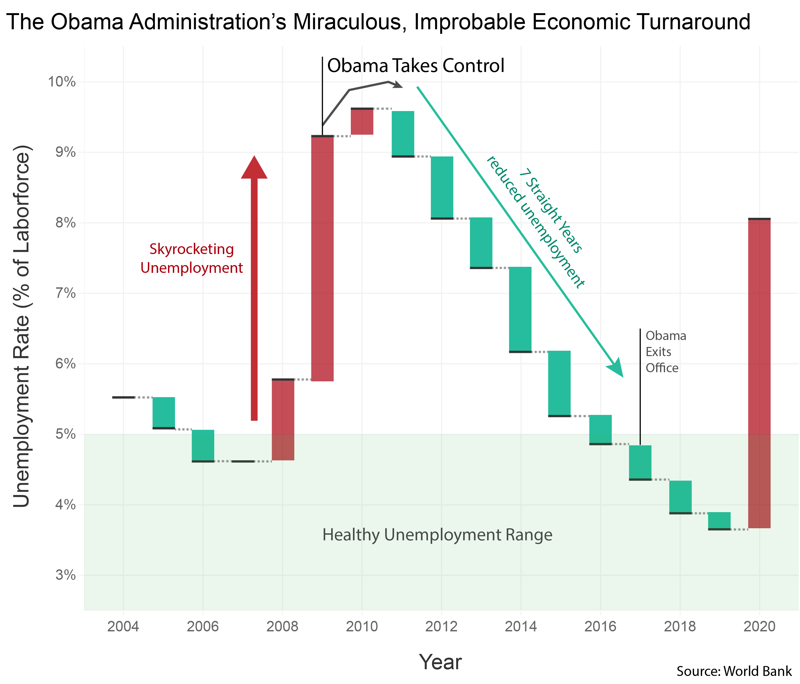
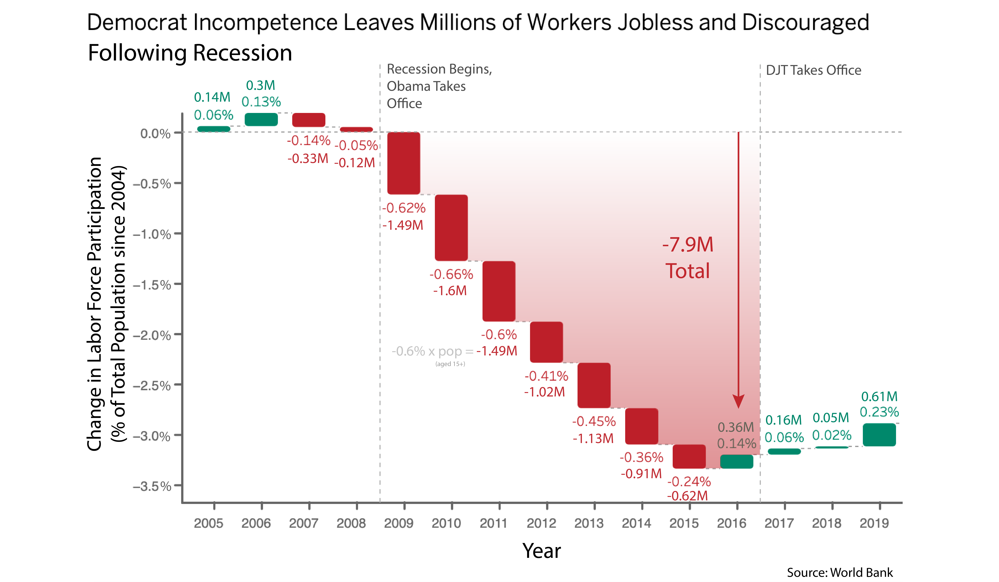
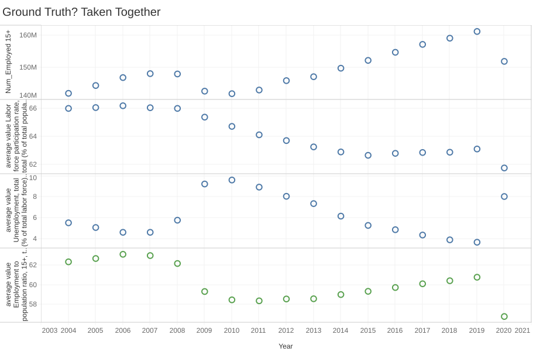
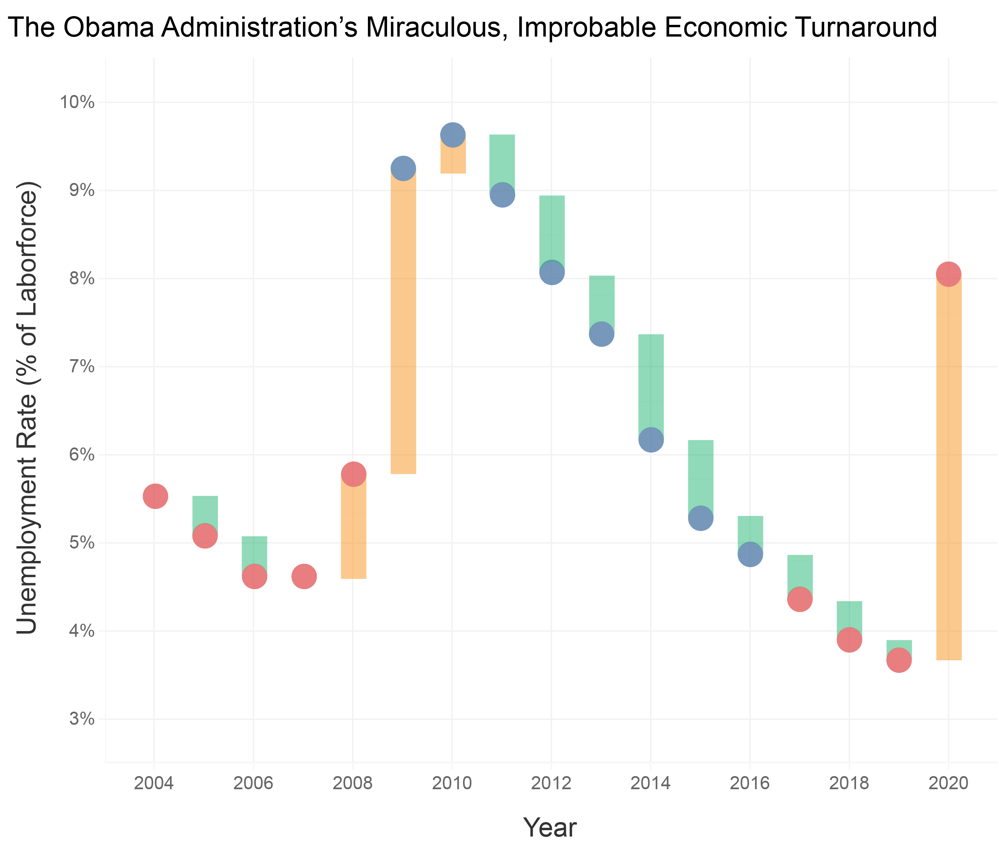

Proposition: The Obama Administration Helped Workers Recover from the Recession
Pro Argument

Design Decisions and Rationale for Pro:
-
Choosing to Use Unemployment Rate as Indicator (Rating: 1)
Unemployment rate is termed "Headline Unemployment Rate" for a reason. It is the most commonly used indicator for reporting economy health during recessions. Because of this, it is a "default choice," and is earnest in the sense that this is probably the first thing the visualizer (me!) naturally considered for their y-axis. However, because of the misconceptions people have with the unemployment rate, it does not tell the viewer what they likely misbelieve it to. In the case I find, it just so happens that in retrospect, using unemployment makes Obama seem better than it may have actually been. The most direct analysis may be employment rate given in Appendix. -
Title Choice (Rating: -1)
This is very misleading because it implicitly claims that unemployment is the correct metric for evaluating the turnaround. Additionally this attributes the change in the unemployment to the Obama administration. I don't have enough evidence to show that the unemployment rate was caused by the Obama administration. So a bit of correlation/causation issue. -
Use of the Waterfall Style Plot (Rating 1)
In context, I am trying to get your trust. While it's not misleading on its own it is to set up later deceptions by making you let your guard down. Waterfall plots in economics carry connotations of objective stock graphs, so familiarity can make it seem like I'm not doing anything wierd. There is a bit of abiguity of direction since we must calculate a difference in the waterfall plot. -
Placement of the Start and End of Obama Term (and Arrows) (Rating: -1.5)
I chose to place the start of the Obama administration in the middle of the 2009 year and only point to the top of the point. Because I am (correctly) taking a backwards difference, the most fair placement would be to put it in between 2008 and 2009. By placing it on top of the mark, I imply that he receives custody at the end of the mark, implying that the "top" of the mark is the transition from 2008 to 2009, when in fact 2009 is the whole bar. So I get to cut out the worst year of the recession from Obama's track record. This lets me position Obama's arrow as "turning around" the economy in a more attractive way. I also adjust the end date to have an 8 year window and attribute Trump's first term to Obama. This is directly deceptive and unethical. The only reason it is not a -2 is because I didn't directly change the data or perform a hidden calculation on the data. -
Color Palette (Rating -0.5)
I use pastels to soften the chart, giving a "look how good we did" impression. I used green and red to imply good and bad and make it look like a stock graph to be more trustworthy. I tried to avoid using pure reds and greens, opting for more mixed red and more of a cyan to maybe help with colorblindness but I ultimately couldn't push that far without losing the "good and bad" - Aside: Added my source, adds credibility
Con Argument

-
Choosing to Use Change of Labor Force Participation as Indicator (Rating: 2)
The use of Labor Force Participation is, surprisingly, very earnest. While it may feel deceptive because of the title's charged language, this is the relavant quantity to analyze the question of leaving. The only manipulation on the percentage data is to take the difference: Last year's % - this year's %. So the trend is real and verifiable, but with a reasonable y axis offset. -
Calculation of the Magnitude Number (Rating 0)
I genuinely cannot tell. Before I tried to bias anything, this was the calculation I used as just the "normal" way to do things. I put the calculation details as an example on the graph. It is most directly (this year's labor participation % - last year's %) * the total population aged 15+ this year. For the full story, see Appendix A for the discussion of this important calculation. As it turns out, this calculation implicitly normalizes away the population difference between two sequential points. This is because the labor force participation (total labor force / total pop) is already a normalized quantity; it is a percent, afterall. However, the total labor force is NOT intended to be a normalized quantity. And during this time, the population of the US grew significantly, effectively on pace with the decline in the labor force participation. So if you just plot the total labor force, you don't really see the effect anymore, but this is like discounting an effect because it is covered by inflation. The "correct" way to do things would be to adjust for inflation then compare, which is somewhat what this calculation does. However, this will be misleading because it is against the convention of magnitudes in the labor force, which should be nominal, or unnormalized. So it is a tricky situation. Because of the claim of the title, it is necessary for persuasion to give some actual numbers on these people leaving, but what should this be called? It's not a very standard metric, even if I think it's actually informative and the correct way to go about the analysis. Therefore, I didn't even give it a name, I just left the example calculation on the graph so that it looked plausible. But I intentionally never label what it is. That isn't misleading (yet) because I tell you precisely how I am calculating this. I could have normalized everything to 2004 population, but then I would need to say that since the formula would be explicit rather than recursive. And saying the indicator is a named value might be even more misleading. -
Highlighting of Area of Loss with -7.9M Arrow (Rating: -2)
While it is relatively honest to include the magnitude version of the percentages, this is absolutely not a comparison I can make from my methods. I cannot conduct a sum using the manipulations given because it will not really be honest. If the population was normalized to a base year like 2004 then it's fine, but the way that I've implemented the year over year would imply that I am taking a net change in the labor force between 2008 and 2016. This would imply that the labor force has shrunk by the summed amount (-7.9M) while in fact the labor force has grown due to the effect of growing population. So By including the arrow I am making the statement that "The numbers I calculated on individual bars can be summed linearly in a way that directly connects with the magnitude of the labor force. This could be normalized to some standard year's population" This is not allowed, even though the individual calculations may be allowed. So it is both intentionally misleading and changing the data in a subtle way that is highly unethical. Highlighting the red area is itself fine but it misrepresents areas in this context. -
Title Choice (Rating: -1)
This is deceptive, but not in the obvious way. Most directly, I cannot use the word "and" instead of "or." Saying "leaving millions of workers jobless OR discouraged" is correct and technical. A discouraged worker is a technical term for someone who has given up looking for work (and therefore do not count towards unemployment rate), so these people count as jobless and discouraged. But it is not logically sound to say that all people who are induced to leave the labor force are discouraged. For example, many could instead have gone to college or have become stay at home parents, these also count as leaving the workforce or "jobless." So it's interesting that the language in that section is technical language, not charged language, and is designed as a "red herring" away from the real deception/issue of using the work "and." The assignment of blame to the democratic party is a jump in logic. It is the most likely explanation given from the graph, but the recession was a complicated event. It's reasonable enough, but actually the more egregious deception is the "and" vs "or" language. -
Use of the Waterfall Style Plot (Rating 0.5)
In context, I am again trying to get your trust. While it's not misleading on its own, it sets up later deceptions by making the viewer let their guard down as "just another stock plot." Waterfall plots in economics carry connotations of objective stock graphs, so familiarity can make it seem like I'm not doing anything wierd. Because I aggregate the accumulation, the presentation lends towards ambiguity. The graph in general is flexible enough to make deceiving changes hard to spot, which is why I converged to it twice essentially. -
Selection of Dates and Use of a Reference Year (2004) (Rating -1)
I intentionally picked 2004 because it makes the trend very obvious. If we zoom out a bit, then its clear that there is more variability than I am implying with the relatively stable 2004-2008 and 2016-2019 regions. Also I exclude 2020 because it makes the Republicans look bad from the covid spike. On the other hand, this is the natural window to look at. I am interested in the recession so looking at the preceeding and following president's terms makes sense. -
Aside: Placement of the Obama Administration Beginning and End (Rating 2)
This is actually the correct way to do it as opposed to the previous graph. Most fair. Also added my source, adds credibility
Final Reflection
My original design idea was to take advantage of terminology that is often misunderstood, so that my arguments would be true in a technical sense, but could be misleading in a targeted way to the general public. Many people, because of their past experience with the normal use of the english language and interpretations from the news etc, have misconceptions or biases regarding economic indicators that seem perfectly reasonable without closer inspection. A good example is the term "unemployment rate," which is the number of people not employed AND actively looking for work AND available to take a job divided by the labor force (not the total pop). Likewise, the labor force is the number of employed people plus the number of unemployed people. Individuals who have given up searching for a job due to a belief that no suitable jobs are available (so called "discouraged workers") do not count towards the unemployment rate. There is a somewhat famous scenerio where creating a job incentive program aimed at getting discouraged workers to rejoin the workforce can INCREASE the unemployment rate because they now count as unemployed. This is the point where I should acknowledge my own bias associating "democrat" with "good." Because of this, I was looking for an example of that particular scenerio in the data, where the unemployment is high due to a definition thing, but actually the Obama admin is helping the economy in a more real sense. In reflection, this is an unethical way to approach the data. While I thought finding this trend would be straightforward, I was surprised to find that there was no such signal in the data I could identify. In fact, I found the opposite, that the way we define unemployment was making it so that the unemployment was shrinking in part because of people leaving the workforce (discouraged workers or otherwise). In effect, using unemployment makes Obama look better than what actually might have happened. This was an incredibly difficult part of the process as I genuinely couldn't tell what was really going on or where the "objective ground truth" was. I made two visualizations from what I thought were both important indicators and they told completely different stories. This was the original idea of the design, where I specifically target ideas about economic definitions, but in doing so I myself became persuaded by both arguments. Rational choices led to diverging but extremely persuasive graphs before I even began to intentionally try to mislead the viewer. I think that this issue ultimately gave me a better sense of the ethics of data visualization in that either graph was a valid interpretation of the data. In my case, there was only an ethical issue because I was trying to use everyday language to explain a technical result. The ambiguity there makes it very hard to identify a boundary between acceptable persuasive decisions and misleading ones.
There was a point after which I began intentionally trying to amplify the signal. I think this amplification is an unethical line that shouldn't be crossed. There is a difference between making a signal more noticable by highlighting vs directly amplifying the data. Even then, I throw out nulls if it seems reasonable, so I would not argue for maintaining the data's purity at all costs. My best definition for persuasive ethical visualization is visualization techniques that help to highlight trends, but do not directly amplify the signal. So for example, changing the starting point of the Obama term was not ethical, and putting a wrong value for the total change was also unethical, even if it greatly helps the argument. Beyond that, I can't draw a sharp boundary. The whole point of my approach was that (before amplifying), both arguments were technically right, even if they appear wrong, which has made the line very blurry. It's entirely possible that someone could have chosen just one of these indicators in complete earnest without considering the subtle bias they were introducing. Is that person's decision unethical? Before this assignment I would have claimed they had a duty to check other representations to avoid harmful conclusions even if the implication seems obvious. However, now I am not so sure. It feels like you would waste a ton of time chasing ghost interpretations that are not even there. It seems like this much scrutiny would make the data analysist role intractible on large datasets. So I suppose that there is a duty to check any obvious counter interpretations, but it is not unethical to not check all of them. Then what if the indicator is intentionally picked to show a trend? In my analysis this was the choice to use unemployment vs labor force participation. Intent does make it "more unethical," but I would still leave the door open to claiming that the designer has a freedom to choose the indicator that they believe is best suited for the analysis. Ultimately if I needed to give a definition in the grey areas, I would say that having a rational argument for the merit of one's decisions conbined with plausible deniability is a way to determine ethical vs unethical.
Appendix A: Discussion of Data Manipulations
For Con Graph
I downloaded the raw file, rewrangled the data myself, and examined it to try to get the 15-64 categories. But then because of the labor force implicit definition cutting off 15+, the only fair category is 15+ total population. And I can only calculate the population for 15+ using just this dataset even though it would appear like I can get the actual population. Note labor force excludes individuals less than 15 because they cannot be officially employed.
num_employed = average value Labor force, total*(1-0.01*average value Unemployment, total (% of total labor force) (national estimate))
total_pop 15+ = Num_Employed 15+/(0.01*average value Employment to population ratio, 15+, total (%) (national estimate))
Change in Labor Force Participation % = This year's Labor Force Participation % - Last Year's Labor Force Participation
Normalized (YoY) Change in Labor Force Magnitude 15+ = Change in Labor Force Participation % * total_pop 15+
For Pro Graph
I also needed to implement a difference method to generate the bar lengths
Change in unemployment % = This year's unemployment % - Last year's unemployment %
Appendix B: What is the truth then?
I genuinely had to investigate this because I would look at the visualizations I made myself and would be convinced of both sides. The resolution is to plot the four relevant plots right on top of each other and just stare. I am not going to put a lot of effort into this since it is outside the scope of the assignment, but here is the data if you reach this conclusion and want to know as well.
Graveyard
